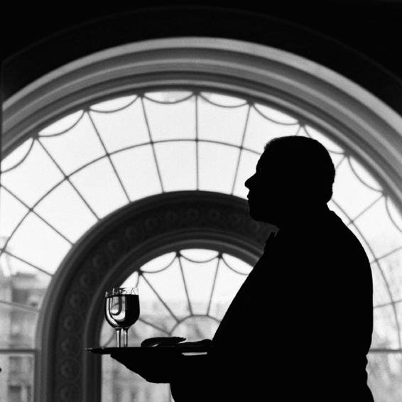
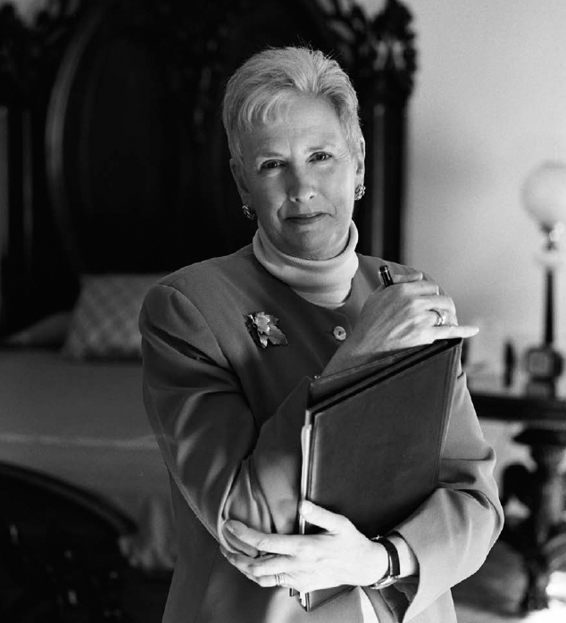

Bí mật, trung thành và kín đáo là nhiệm vụ của những kẻ bề tôi. Không phải trung thành với cá nhân người đương nhiệm mà là trung thành với tổ chức. Bầu không khí của tòa nhà sẽ không thể chịu nổi nếu như tổng thống phải nhìn tất cả những người giúp việc như những kẻ nghe lén, vì thế ông phải xem sự trung thành của họ là điều đương nhiên. Bí mật quốc gia và bí mật cá nhân tuy không được công khai, nhưng trong một ngôi nhà mà những gì riêng tư được thốt ra mỗi ngày, một số những điều đó hẳn cũng lọt vào tai của chí ít một nhân viên nào đó
– Irwin “Ike” Hoover, Tổng Quản lý, 1913–1933,
“Ai là ai, và tại sao, trong Nhà Trắng”, Saturday Evening Post, 10 tháng 2 năm 1934.
Hỏi: “Vì sao ông không có nhiều ảnh?” Trả lời: “Vì tôi biết các máy quay phim đặt ở đâu”
– Nelson Pierce, Tổng Quản lý, 1961–1987.
“Không nhìn điều xấu, không nghe điều xấu, không nói điều xấu”, những người giúp việc trong tư dinh tổng thống thường trả lời như thế khi được yêu cầu chia sẻ các tình tiết liên quan đến những khoảnh khắc riêng tư của các đệ nhất gia đình. Nếu như họ có một phẩm chất nào đó giống nhau thì đó chính là khả năng giữ kín các bí mật, nhất là khi họ vẫn còn đang làm việc. James Jeffries là nhân viên duy nhất còn đang làm việc chịu nói về những trải nghiệm của mình, còn các nhân viên về hưu khác thì thường từ chối gặp mặt vài lần rồi mới chấp nhận chia sẻ ký ức của họ, thậm chí một số người còn cố gắng che giấu những câu chuyện đau lòng hoặc những câu chuyện không hay bằng cách tô vẽ chúng với một màu sắc sáng sủa hơn mặc dù những lời lẽ đó rất gượng gạo. Những gì họ chia sẻ ở đây chỉ là những chuyện mà họ cảm thấy mình có thể tiết lộ, và trong hầu hết các trường hợp, những câu chuyện này phản ánh nỗ lực trình bày các trải nghiệm của họ một cách thấu đáo và thận trọng. Dù vậy, những hồi ức của họ cũng giúp vén tấm màn bí mật và cho ta một cái nhìn đầy mê hoặc và đôi lúc sửng sốt về tính cách của những người sống trong tòa hành pháp.
Các nhân viên phục vụ, làm phòng và những người hầu riêng là những người gần gũi nhất với đệ nhất gia đình. Họ cũng là những gia nhân khó mở lòng nhất vì muốn bảo vệ sự tin tưởng mà đệ nhất gia đình đặt vào họ. Họ là những người đầu tiên nhìn thấy đệ nhất gia đình vào buổi sáng và người cuối cùng nhìn thấy họ buổi tối. Những gia nhân đó – cùng một vài người khác, như đầu bếp gia đình chẳng hạn – đã nhìn thấy các tổng thống và đệ nhất phu nhân cãi cọ, cười nói, khóc lóc với nhau và là những cố vấn đáng tin cậy nhất của nhau. Và tất cả bọn họ chắc chắn sẽ đem theo rất nhiều bí mật xuống dưới mồ.
Một câu chuyện cho thấy tầm quan trọng của sự kín đáo của các nhân viên đã được kể lại không phải từ miệng một nhân viên mà từ một thành viên gia đình tổng thống. Ron Reagan nhớ mình đã đến thăm cha mẹ ở Nhà Trắng trong thời gian xảy ra vụ tai tiếng Iran–Contra, trước khi chính quyền của cha anh thú nhận là đã giúp bán vũ khí cho Iran để đổi lấy việc phóng thích các con tin và tài trợ cho các phiến quân Contra ở Nicaragua. Trong thời gian lưu lại đây, cậu con trai của tổng thống, lúc đó khoảng 24, 25 tuổi, cảm thấy ngạc nhiên trước việc nói năng vô tư của gia đình anh trước mặt người giúp việc. Chuyện là tối hôm đó, gia đình họ ăn tối cùng nhau trong Phòng ăn Gia đình ở tầng hai, sau đó họ chuyển sang Phòng khách Tây (West Sitting Room) ở tầng hai, một căn phòng ấm cúng thoải mái với một cửa sổ hình bán nguyệt kéo dài từ mặt đất lên đến trần nhà nhìn ra hành lang West Colonnade và khu Cánh Tây. Tại đây, cậu công tử nhà Reagan đã hối thúc cha kể về tình hình Iran–Contra.
“Đến một lúc nào đó, tôi bắt đầu hơi nổi nóng vì chuyện này”, anh nói, “và trong lúc tôi đang chỉ trích ba tôi gay gắt thì đột nhiên tôi nhận ra rằng có một người đang đứng đó với đĩa bánh trên tay. Tôi lập tức cảm thấy là ‘ôi trời, không xong rồi’, vì đã làm thế trước mặt người khác”. Nhưng rồi Ron kinh ngạc khi nhận ra rằng sự hiện diện của những người giúp việc “dường như chẳng khiến ba mẹ tôi quan tâm”. “Các nhân viên ở đó kín đáo đến mức ta không cần phải sợ họ vội vã chạy đi đưa tin cho báo chí”. Sự kín đáo đó là điều bắt buộc, Ron giờ đây nghĩ lại. Nếu tổng thống lúc nào cũng phải lo lắng chuyện nhân viên tiết lộ thông tin cho báo chí thì “cuộc sống sẽ gần như không chịu nổi. Ta cần một nơi để ẩn náu và không bị liên tục nhòm ngó”.
Để có thể đạt đến mức độ tin cậy đó có thể mất nhiều thời gian, mà mỗi chính quyền thì lại mỗi khác. Mỗi nhân viên đều biết đến khi nào thì họ được đệ nhất gia đình tin tưởng, Tổng Quản lý Gary Walters nói. Với Walters, thời điểm yêu thích nhất của ông khi làm việc dưới một chính quyền mới là lúc ông được tổng thống thân mật gọi bằng tên.
“Các nhân viên trong dinh biết rõ khi nào tất cả bọn họ có thể thở phào khoan khoái. Đó là khi các nhân viên phục vụ hay các quản lý bước vào một căn phòng trong lúc mọi người đang nói chuyện nhưng câu chuyện vẫn không ngưng lại mà vẫn tiếp tục. Điều này khiến tất cả chúng tôi thấy nhẹ nhõm, bởi chúng tôi biết mình đã chứng minh được rằng chúng tôi là những kẻ đáng tin”.
Tuy nhiên, vẫn có những lúc tổng thống cần có sự riêng tư. Như những gì nhân viên phục vụ Herman Thompson nhớ lại, ngay cả người thân thiện dễ gần nhất như Tổng thống George H. W. Bush cũng thỉnh thoảng nói câu “Cảm ơn anh nhiều” với một gia nhân. “Điều này đồng nghĩa với việc anh hãy xoay người lại và đi ra ngoài”.
Mỗi tổng thống đều có một người phục vụ ưa thích nhất, và với Tổng thống George W. Bush thì đó chính là James Ramsey, hay chỉ là “Ramsey” như tất cả mọi người trong tư dinh đều gọi ông một cách thân mật. Ông là một nhân viên phục vụ chuyên nghiệp và hoàn hảo nhưng lại rất thích “đối đáp” với Tổng thống George W. Bush và mối quan hệ này đã thực sự gắn kết họ với nhau. Ramsey là một trong rất ít nhân viên trong tư dinh được gia đình Bush mời đi cùng với họ trên chuyên cơ Air Force One để đến làm việc tại nông trại của họ ở Crawford, Texas. Ông hăng hái bảo vệ sự riêng tư của gia đình tổng thống khi chẳng bao giờ nói chuyện với báo chí hay khiến cho tổng thống nghi ngờ lòng trung thành của ông. Ông cũng luôn từ chối khi được mời ra ngoài nhậu nhẹt với các đồng nghiệp bởi cho rằng người khác “sẽ khiến ta gặp rắc rối”.

JAMES RAMSEY
Ramsey cười rất tươi và rất hay cười, ông thực sự tôn sùng những gia đình ông hầu hạ suốt ba thập niên trên cương vị nhân viên phục vụ của Nhà Trắng. Reggie Love, chàng trợ lý cá nhân trẻ tuổi, đẹp trai và rất hòa đồng của Tổng thống Obama vẫn còn nhớ đến tính hài hước dễ lây của Ramsey. “Ông ấy trêu tôi: ‘Tôi hiện đã 70 tuổi. Khi nào cậu bằng tuổi tôi, tôi hy vọng là cậu sẽ phong độ bằng một nửa tôi’”.
Ramsey có bộ ria mép trắng sáng và chỉ cạo nó đi sau khi ông lui về nghỉ hưu năm 2010. Tất cả y phục của ông, kể cả áo lót, đều được ông đưa đi giặt khô, còn móng tay của ông luôn được cắt tỉa cẩn thận bởi người ta sẽ nhìn vào tay ông khi ông phục vụ cho họ. Ông không hề thấy xấu hổ về tính điệu đàng của mình: “Tôi muốn mình trông thật tươm tất về mọi mặt, từ móng tay đến mái tóc”, ông nói. “Tôi là một nhân viên phục vụ tại Nhà Trắng!”
Tự cho mình là tay sát gái, Ramsey hẹn hò với không ít phụ nữ sau khi ông ly dị và thậm chí còn giới thiệu một vài bạn gái của mình với Tổng thống George W. Bush tại các bữa tiệc thết đãi các nhân viên trong dịp lễ. Thỉnh thoảng ông cũng kể cho các cô con gái nhà Bush nghe về các cô bồ của ông. “Jenna và Barbara là những đứa trẻ tôi rất yêu quý. Chúng là bạn của tôi... Nếu chúng hỏi, tôi sẽ kể với chúng là ‘Tôi có một cô bạn gái. Tôi cũng chưa đến nỗi già quá, phải không?’”
Ông George W. Bush, người mà Ramsey gọi thân mật là “Bush con”, thường trêu chọc ông không thương tiếc và ông cũng đáp trả hết mình. Ông nhớ có một ngày khi ông đang phục vụ thức ăn nhẹ tại một cuộc chơi T-ball [**] trên Bãi cỏ phía nam thì Tổng thống Bush bước ra từ Phòng đón tiếp các phái đoàn ngoại giao. “Làm việc đi, Ramsey!” tổng thống pha trò. Mối quan hệ giữa họ là như vậy đó, ông nói. Họ luôn tự nhiên thoải mái với nhau mặc dù ai cũng biết rõ người nào mới là chủ.
[**](Bóng chày dành cho trẻ em.)
Tổng thống George W. Bush thích đùa nghịch với những người giúp việc trong tư dinh. Ông thường lật úp các khung hình lại khi các anh phục vụ và các cô hầu phòng không để ý, và vờ lấy cây vợt đập ruồi xua những con ruồi tưởng tượng khi thấy họ đi ngang qua. “Tổng thống rất thích trêu chọc các nhân viên phục vụ”, Andy Card, chánh Văn phòng Nhà Trắng của Bush nhớ lại.
“Tổng thống Bush”, Ramsey ngưng lại một lúc rồi nói tiếp. “Tôi sẽ không bao giờ quên gia đình ông ấy. Cho dù tôi có sống đến trăm tuổi, tôi cũng sẽ không bao giờ quên gia đình ông ấy”.
Trong căn hộ nhỏ của Ramsey, mà ông gọi là “cái chòi của anh chàng độc thân”, dán đầy những hình ảnh chụp ông với các tổng thống cùng những nhân vật lịch sử khác như Nelson Mandela (như để khoe với các cô bồ là “Ồ, anh quen với nhiều người như thế lắm cưng à”), cùng những bức thư ngắn mà Tổng thống Reagan và bà Hillary Clinton viết để cảm ơn ông đã giúp phục vụ cho bữa quốc yến. Có một tấm hình mang bút tích của Tổng thống Obama, ghi rằng: “Ông là một người bạn tốt, mọi người sẽ luôn nhớ đến ông”.
Ông hãnh diện với công việc ở Nhà Trắng của mình đến mức bạn ông, nhân viên phục vụ Buddy Carter đã trêu ông như sau: “Ramsey ấy à, ông ấy đến ngủ cũng đeo thẻ ra vào Nhà Trắng”.
Mỗi khi đệ nhất gia đình có mặt ở khu nhà riêng của họ trên tầng hai và tầng ba Nhà Trắng thì gần như lúc nào cũng phải có một nhân viên phục vụ túc trực ở gần đó hay trong phòng bếp tầng hai để chờ phục vụ. Các phòng trên tầng hai đều gắn chuông báo nối với phòng để đồ ăn để gia đình tổng thống gọi đem thức ăn đến, nhưng Ramsey hiếm khi nào cần đến chuông báo: “Mỗi khi họ cần gì, tôi đều cảm nhận được”.
Ta có thể dễ dàng hiểu vì sao Ramsey được thương yêu đến thế. Ông vẫn giữ chất giọng miền Nam ngọt ngào của những năm tháng trưởng thành ở Yanceyville, North Carolina. Cha dượng ông là một nông dân trồng cây thuốc lá (ông chưa bao giờ gặp cha ruột), vì thế phần lớn thời thơ ấu của ông được dành để cày ruộng thuốc lá với con lừa của gia đình.
“Công việc quá cực khổ nên tôi nói với cha tôi là ‘chừng nào học xong trung học, con sẽ đi. Con không thể ở lại đây’. Và khi cha tôi hỏi: ‘Vậy con sẽ sống ra sao?’ tôi trả lời: ‘Con phải liều thôi’. Khi tôi đến Washington, tôi chẳng quen biết ai ở đó”.
Ông đến Washington khi ông 20 tuổi. Ông chẳng có chỗ nào để ở cho đến khi tìm được một ông chủ trạm xăng dễ mến cho ông ngủ nhờ và tắm rửa ở đó. Cuối cùng ông cũng tìm được một căn phòng trên Đại lộ Rhode Island Tây Bắc với giá 10 đô một tuần. Trong thời gian ở đó, ông kết bạn với một người làm việc ở tòa nhà chung cư Kennedy Warren lộng lẫy ở tây bắc Washington. Ông nói với bạn là mình làm việc rất giỏi và được anh ta giới thiệu ông vào phỏng vấn. Ông được tuyển dụng ngay tức khắc.
Không bao lâu sau, tại một bữa tiệc, ông gặp một người làm việc trong Nhà Trắng, ông hỏi người này có thể giúp ông làm việc ở đó không. Và câu đầu tiên mà nhân viên Nhà Trắng đó hỏi ông là: “Anh có hồ sơ lý lịch không?”
“Không, tôi chẳng có hồ sơ nào cả” Ramsey trả lời.
“Nếu không có thì anh đừng mất công viết đơn xin việc”, người đó nói giọng hoài nghi. “Họ sẽ không tuyển anh nếu anh không có bất cứ giấy tờ nào”. (Giám sát điều hành Tony Savoy nhớ mình đã sốc khi biết nhiều người xin việc có tiền án tiền sự nghiêm trọng. “Tất cả những người đến đó đều nói lý lịch họ sạch cho đến khi ta kiểm tra các thông tin cơ bản về họ. Nhờ chuyện kiểm tra này mà tất cả mọi chuyện xấu xa đều được lôi ra ánh sáng. Có một thanh nhiên đến xin việc dưới thời chính quyền Clinton. Mãi đến phút chót cậu ta mới khai ra rằng mình từng bị bắt và kết án vì tội danh hiếp dâm. Mà chúng tôi thì lại đang có bé Chelsea 13 tuổi sống ở trên lầu. Thế là đơn xin việc của cậu ta bay thẳng vào sọt rác”).
Lý lịch của Ramsey không có chút tì vết nào, vì thế ông cứ điền vào đơn xin việc và chờ. “Tôi xin vào Nhà Trắng sau khi làm việc ở tòa nhà Kennedy Warren được khoảng hai ba năm và nhủ thầm là ‘không biết làm việc ở nơi này ra sao’”, ông vừa cười vừa nói. Nhưng phải đến mấy năm sau ông mới được Nhà Trắng gọi. Ngay khi Quản lý tổ phục vụ Eugene Allen và sau đó là Tổng Quản lý Rex Scouten gặp ông, họ nhận ông vào làm ngay ngày hôm đó.
Bắt đầu với công việc phục vụ dưới thời Tổng thống Carter, Ramsey làm việc ở Nhà Trắng suốt 30 năm cho sáu đời tổng thống: Jimmy Carter, Ronald Reagan, George H. W. Bush, Bill Clinton, George W. Bush, và Barack Obama, ông rất biết ơn ông Eugene Allen – “ông ấy nói với tôi như nói với con trai ông ấy” – vì đã khuyên ông giữ không để bị dính vào các rắc rối, và giữ kín mọi chuyện nghe được trong Nhà Trắng cho riêng mình. (Bộ phim Người phục vụ phát hành năm 2013 của đạo diễn Lee Daniel là bộ phim phỏng theo cuộc đời của Allen).
Thậm chí mấy chục năm sau, Ramsey cũng không làm trái lời dạy của Allen. Ông không bao giờ tiết lộ chuyện riêng tư của những người ông từng phục vụ cho người ngoài. “Cậu không làm việc ở McDonald hay Gino mà làm việc ở tòa nhà này”, Allen nói với Ramsey. “Nếu cậu gặp rắc rối hay nói gì bậy bạ, cậu sẽ tiêu ngay”.
Tuy nhiên, ông không cần áp dụng quy tắc im lặng này với các đồng nghiệp của mình. Tổng Quản lý Stephen Rochon nhớ rõ Ramsey là nhân viên phục vụ đầu tiên chúc mừng ông đến Nhà Trắng và kể cho ông nghe những chuyện đang xảy ra ở tầng hai và tầng ba.
TRÁCH NHIỆM GIỮ kín chuyện nội bộ gia đình tổng thống chưa bao giờ bị một gia nhân trung thành như Wilson Jerman, một ông lão 85 tuổi có giọng nói nhỏ nhẹ, lơ là khi ông được tôi phỏng vấn cách đây không lâu. Bắt đầu bằng công việc quét dọn năm 1957, ông trở thành một nhân viên phục vụ khi về hưu năm 1993. Nhưng đến năm 2003, ông đi làm trở lại (vì thấy nhớ “ngôi nhà này”) và giữ chân gác cửa bán thời gian cho đến năm 2010. Như mọi người gác cửa của bất cứ tòa nhà nào khác, ông nhìn thấy tất cả những người ra vào nơi đó và luôn giữ kín các bí mật của họ.
Jerman xem lòng trung thành của ông đối với đệ nhất gia đình và chuyện bảo vệ sự riêng tư của họ là sự đáp trả tự nhiên cho việc họ tin tưởng ông. “Tôi cảm thấy hạnh phúc khi có thể tự nhiên lên lầu và vào phòng đệ nhất phu nhân để lấy những thứ mà bà ấy nhờ tôi lấy”.
Katie Johnson, cựu thư ký riêng của Tổng thống Obama, cho biết cô rất thích chơi trò đố vui với các nhân viên phục vụ. Khi cô hỏi một nhân viên phục vụ rằng điều gì thay đổi nhiều nhất trong Nhà Trắng trong mấy chục năm ông làm ở đó, ông đã nói hai điều: đó là có nhiều phụ nữ hơn và không còn chuyện nhậu nhẹt trong bữa ăn trưa”.
“Lúc trước, mọi người thường uống rất nhiều vào giữa ngày”, ông cho cô biết. “Một trong những lý do họ có nhiều nhân viên đến thế là do họ cần người pha rượu martini cho các cuộc họp giữa ngày, bây giờ thì hết rồi”, cô nói. “Cô có thể tưởng tượng một người đến cuộc họp nội các và yêu cầu một ly rượu martini dry không?”
Nelson Pierce, một nhân viên quản lý từng làm việc ở Nhà Trắng 26 năm và đã qua đời năm 2014 ở tuổi 89, thường được yêu cầu đem các tài liệu “mật” đến cho tổng thống, tức những giấy tờ nhạy cảm mà chỉ riêng tổng thống mới được quyền xem. Tôi rất may mắn được phỏng vấn Pierce trước khi ông qua đời. Ông cho tôi biết là có một ngày, ông phải đưa thứ gì đó cho Tổng thống Lyndon Johnson ký trong bữa ăn trưa với Bộ trưởng Ngoại giao Dean Rusk, Bộ trưởng Quốc phòng Robert McNamara cùng ít nhất sáu cố vấn khác. Gần như chắc chắn là họ đang nói về tình hình Việt Nam lúc đó.
Pierce đang đứng cạnh tổng thống và nôn nóng chờ ông ấy ký tài liệu thì đột nhiên ông nghe thấy một điều bất thường: “Bộ trưởng McNamara hét lên với tổng thống. Ông ấy đang tức giận chuyện gì đó. Tôi không thể lặp lại những gì ông ta nói hay những gì tổng thống nói với ông ta, dù chỉ một câu. Tôi không hiểu đó là chuyện gì và tôi xin thề trên cả chồng Kinh Thánh là tôi không còn nhớ bất cứ từ nào họ nói ra bởi tôi đã xóa hết mọi thứ trong bộ nhớ. Dù có bị thôi miên đi nữa, tôi cũng không nghĩ họ có thể moi được gì từ tôi”.
Nhiều thập niên sau, chánh Văn phòng Nhà Trắng Andrew Card nói rằng trong các cuộc họp ở Phòng Bầu dục với Tổng thống George W. Bush, ông nhận thấy một số cố vấn của tổng thống tỏ ra rất bất an mỗi khi thấy các nhân viên phục vụ và những gia nhân khác bước vào.
“Họ cố gắng hết sức để không làm mọi người thấy khó chịu trong khi vẫn thực hiện công việc phục vụ của mình. Theo tôi thì người không thấy thoải mái với nhân viên phục vụ là những người khác chứ không phải tổng thống hay đệ nhất phu nhất. Họ không biết họ có nên ngừng nói không”.
Tuy nhiên, điều mà các nhân viên tự hào với bản thân nhất – tức khả năng làm mình trở nên mờ nhạt trước mắt người khác – lại có thể khiến họ bị phi nhân hóa. Việc được tổng thống tin tưởng vào khả năng gạt bỏ mọi chuyện ra khỏi trí óc khiến các nhân viên đôi khi cảm thấy như họ không hề tồn tại.
“Tôi rất ngạc nhiên khi thấy mọi người có thể nói bất cứ điều gì xung quanh ta”, Phục vụ Herman Thompson, nhân viên làm việc bán thời gian từ thời Kennedy cho đến cuối nhiệm kỳ đầu tiên của Bush nói. “Nhiều lúc nghe mọi người nói chuyện trong Phòng Quốc yến trong lúc ta đang phục vụ ở đó mà ta cứ tưởng như họ đang thì thầm điều gì đó. Gần giống như thể ta không có mặt ở đó vậy”.
Đôi lúc, cả tổng thống và đệ nhất phu nhân cũng dường như quên bẵng sự có mặt của các gia nhân ở gần đó. Nelson Pierce nhớ ông đã bối rối thế nào khi một buổi tối, lúc ông mang mấy túi hành lý lên phòng Tổng thống Reagan, ông nghe bà Nancy Reagan quát lên với chồng, người đàn ông quyền lực nhất thế giới, ngay trước mặt ông. “Bà ấy mắng chồng là để tivi không chịu tắt. Tổng thống nói: “Em yêu, anh đang xem tin tức mà”. Bà ấy vừa mới mở cửa phòng ra là đã nhào vào mắng chồng xối xả đến mức không tin được. Lại ngay trước mắt tôi. Tôi nghĩ là bà ấy chỉ nên nổi giận với chồng khi chỉ có riêng hai người, ông ấy đang xem bản tin 11 giờ nhưng bà ấy lại tưởng chồng đã ngủ. Tôi hơi ngạc nhiên, thế là tôi vội vàng bỏ hành lý xuống và chạy ra ngoài ngay khi có thể”.
Tổng thống Johnson thường cởi đồ trước mặt nhân viên và nổi tiếng với tật ra lệnh cho người khác khi đang ngồi trên bồn cầu. Có một lần, phóng viên Frank Cormier đã bị sốc khi nhìn thấy Paul Glynn, trung sĩ phục vụ trên Air Force One và cũng là người hầu riêng của ông Johnson, đang quỳ trước mặt tổng thống và rửa chân cho ông trong lúc họ đang ở trên không – điều này lại càng tệ hơn khi ông Johnson chưa một lần thừa nhận Glynn.
“Suốt thời gian nói chuyện, ông Johnson chẳng chú ý chuyện gì khác ngoài việc gác chân này sang hướng bên kia để Glynn rửa chân kia cho ông”, Cormier quan sát. Sau khi chứng kiến cảnh này, Cormier nói mình không còn thấy sốc khi biết Glynn cũng cắt cả móng chân cho Johnson.
Nhưng thường thì việc gần gũi với gia đình quyền lực nhất thế giới khiến các nhân viên thấy mình được kính nể. Và cũng vì lợi ích của chính mình mà họ luôn giữ kín bất cứ điều gì họ nghe thấy. Susan Ford, chỉ mới 17 tuổi khi cha cô lên làm tổng thống, nói rằng: “Họ đã không thể ở đây suốt từng ấy năm nếu họ nhiều chuyện”.
Thợ sơn Cletus Clark, từng làm việc suốt từ thời Nixon đến thời George W. Bush, không bao giờ để lọt một bí mật nào ra ngoài. “Tôi cứ như một bóng ma, luôn lảng tránh tất cả mọi người. Và tôi biết phân biệt phải trái”.
“Họ phục vụ hết đời tổng thống này đến đời tổng thống khác. Họ biết tất cả mọi gia đình và họ luôn kín miệng”, bà Laura Bush nói với tôi, giọng thận trọng hơn so với chồng bà. Ngay cả lúc trò chuyện với các đệ nhất gia đình, họ cũng vẫn rất kín đáo.
“Họ không nói về các tổng thống từng sống ở đây trước ta hay kể bất cứ chuyện gì về gia đình họ. Chúng tôi rất ngưỡng mộ và nể phục họ về chuyện này bởi chúng tôi đương nhiên cũng muốn họ đối xử với chúng tôi giống như vậy sau khi chúng tôi rời khỏi đây”.
Những hồi ức về cuộc sống hằng ngày mà hầu hết các gia đình trân quý được các đệ nhất gia đình đặc biệt quý trọng, chính vì thế họ thường xuyên rủ các nhân viên ở tư dinh tham gia cùng với họ mỗi khi những người này rảnh rỗi. Laura Bush cho biết chồng bà và nhân viên phục vụ Ron Guy đều có chung sở thích đi câu. “Mỗi khi các nhân viên phục vụ đến trang trại của chúng tôi khi chúng tôi tiếp đãi các nguyên thủ quốc gia ở đó, George và Ron Guy đều đi câu cá bất cứ khi nào họ rảnh. Tôi có một bức ảnh phóng lớn rất đẹp chụp George, Phó Tổng thống Cheney và Ron Guy đang câu cá trên chiếc tàu cá nhỏ của trang trại chúng tôi”.
“Có rất nhiều cách để chúng tôi biết từng người làm việc ở đó. Chúng tôi biết họ rất rõ”, bà Bush nói. “Harold Hancock, như tôi nhớ, là một trong những người gác cửa mà chúng tôi rất thương mến. Ông là một người hiền lành đáng yêu và qua đời khi chúng tôi đang ở đó. Tôi có một tấm ảnh tuyệt đẹp chụp ông ấy đứng trước cửa với con Spot, con chó của chúng tôi, để chờ tổng thống về. Họ luôn rất tử tế với tất cả các con vật. Họ làm như thể họ thực sự say đắm tất cả các con vật cho dù có thực hay không”.
Luci Baines Johnson nói cô rất thương Wilson Jerman và cho đến bây giờ vẫn còn nhớ rõ về ông sau gần 50 năm rời Nhà Trắng. “Ông ấy có nụ cười làm mềm lòng cả kẻ man rợ nhất”, cô nói với chất giọng miền Nam kéo dài chậm rãi.
Một ví dụ cuối cùng về sự kín miệng: Jerman tìm cách né tránh câu hỏi của người khác bằng cách không bao giờ thừa nhận nơi mình thực sự làm việc. “Tôi sẽ nói là ‘tôi làm việc ở số 1600 đại lộ Pennsylvania’ và 99% số người không biết chỗ đó là chỗ nào. Họ sẽ hỏi: ‘Đó là nhà kho nào? Đó là tòa nhà nào?’ Và tôi sẽ nói rằng ‘Nó ở dưới phố’”. Còn nếu như cho họ biết sự thật, ông sẽ không muốn trả lời hàng loạt câu hỏi tiếp theo.
Giống như Ramsey, Jerman lo sợ bị đuổi nếu tiết lộ điều gì, đến mức ông chẳng bao giờ nói về công việc của mình lúc còn làm việc ở đó. “Người ta sẽ hỏi rất nhiều thứ”, ông nói, vì thế ta phải làm như “thấy như không thấy, nghe như không nghe. Không biết gì hết”.
Ngay cả khi lịch sử đã hé lộ, Jerman cũng vẫn chỉ tập trung vào công việc của mình và chẳng hề quan tâm đến việc tiết lộ thông tin. Vào đầu giờ chiều ngày 15 tháng 4 năm 1986, Jerman và Bếp trưởng Frank Ruta đang chuẩn bị bữa tối cho gia đình Reagan thì tổng thống bước vào. Ông thường hay vào bếp nhưng lần này ông không chỉ ghé vào hỏi xem họ có khỏe không.
“Tôi muốn các anh biết rằng trong 5 phút nữa chúng ta sẽ bắt đầu bỏ bom Libya, nhưng tôi muốn các anh là người đầu tiên biết chuyện này”, Reagan tuyên bố.
“Hay quá, thưa tổng thống”, Jerman đáp, “nhưng ông muốn mấy giờ ăn tối?”
Reagan khựng lại, suy nghĩ một giây rồi nói: “Tốt nhất anh nên hỏi vợ tôi”.
Ruta cười phá lên khi nhớ đến ánh mắt ngạc nhiên của ông Reagan lúc đó. Chỉ một lúc sau, bà Reagan đã xua chồng ra khỏi bếp. Bà luôn cảnh giác với việc chồng nói chuyện quá nhiều với các nhân viên, nhất là những chuyện tiết lộ bí mật an ninh quốc gia.
Ruta chỉ mới 22 tuổi khi bắt đầu làm việc trong nhà bếp Nhà Trắng, nơi ông chuẩn bị hầu hết các bữa ăn gia đình cho gia đình Reagan. Ông nói với tôi rằng bà Nancy Reagan bảo vệ chồng một cách mãnh liệt – bà thực sự rất tận tụy với ông – nhưng bà chẳng cần phải lo từ phía các gia nhân. Ruta không bao giờ nhiều chuyện, cũng chẳng bao giờ yêu cầu các cô hầu phòng và các anh phục vụ chia sẻ mấy chuyện tầm phào với ông. “Sự riêng tư của họ cần được tôn trọng. Ta không phải ở đó để nhòm ngó chuyện của họ”.
Đôi khi các nhân viên cũng không tránh được việc chứng kiến các khoảnh khắc riêng tư. Mỗi tối, viên quản lý trực ca đêm đều lên lầu đưa cho tổng thống một tập báo cáo chứa các tư liệu nhạy cảm do các nhân viên ở khu Cánh Tây tập hợp lại để chuẩn bị cho tổng thống làm việc vào ngày hôm sau, rồi sau đó tắt đèn. Quản lý Chris Emery nhớ mình thường thấy gia đình Reagan tề tựu trong phòng khách sau bữa ăn tối khi ông đến đưa tập tin. “Có lúc họ xem vở hài kịch tình huống Ai là ông chủ và vặn tivi rất lớn vì tổng thống hơi bị lãng tai. Lúc đó là khoảng 8, 9 giờ tối. Với cặp kính đen to do chính phủ cấp nằm trong chiếc áo ngủ đỏ, tổng thống ngồi làm việc trên chiếc ghế bọc vải hoa, cạnh ông là một cái khay chất đầy giấy tờ. Phu nhân Reagan đứng sát cạnh ông, và nhiều lần khi tôi lên trên đó, tôi thấy họ đang nắm tay nhau. Không ai xung quanh nhìn thấy cảnh đó”.
Thợ sơn Cletus Clark nói ông luôn cố không quấy rầy gia đình tổng thống mặc dù điều này có nghĩa là khiến công việc của ông trở nên phức tạp hơn. “Họ thực sự không muốn chúng tôi quanh quẩn bên họ quá nhiều. Ta vẫn phải làm việc nhưng tránh làm phiền đệ nhất gia đình nhiều nhất có thể. Khi họ ở trong Phòng khách Tây mà ta lại cần xuống Phòng ngủ Nữ hoàng ở phía đông, ta phải lên tầng ba trước rồi đi đến cuối hành lang để xuống nhà bằng cầu thang sau. Ta vẫn phải tiếp tục làm việc”.
Sự trung thành của Clark với công việc rất rõ ràng khi ông được chỉ thị sơn một số thứ ở nhà Charles “Bebe” Rebozo, người bạn thân nhất của Tổng thống Nixon. Báo chí đã nhanh chóng nắm được câu chuyện này và chất vấn việc sử dụng nhân viên Nhà Trắng cho công việc cá nhân.
“Tôi chỉ làm những gì mình được yêu cầu”, Clark nói. “Tôi không hỏi bất cứ điều gì”.
Bà Barbara Bush nói các nhân viên “có lẽ ít ngồi lê đôi mách hơn người bình thường”. Đương nhiên là “vì gia đình chúng tôi là một gia đình hoàn hảo”, bà nói với giọng tinh quái.
Bà Rosalyn Carter đánh giá cao sự kín miệng của các nhân viên. “Tôi hoàn toàn tin tưởng ở họ. Tất cả bọn họ đều rất tốt. Tôi không nhớ mình đã từng che đậy chuyện gì chưa, nhưng tôi nhớ họ chưa bao giờ cố gắng lắng nghe chuyện gì. Họ vẫn làm việc xung quanh khi chúng tôi nói chuyện với nhau nhưng theo tôi nhớ thì họ không hề để ý lắng nghe”.
Các nhân viên rất ghét bị chú ý. Quản lý Nelson Pierce, một người mảnh khảnh với nụ cười hiền lành, không chụp nhiều hình trong thời gian ông làm việc ở Nhà Trắng, chủ yếu là vì ông hay lẩn tránh các tay thợ ảnh trong suốt 26 năm làm việc ở đó (từ năm 1961 đến năm 1987). “Tôi không phải ở đó để được chụp hình”, Pierce nói. “Tôi bị dính ba lần trên tivi: một lần khi tôi đang cắm đèn trang trí Giáng Sinh ở Cửa Bắc và các máy quay phim lẽ ra không được quay cảnh này nhưng tôi vẫn bị dính. Hai lần kia là khi tôi đang cầm ô, một lần che cho tổng thống, lần kia che cho đệ nhất phu nhân khi họ bước xuống máy bay”.
SỰ KÍN ĐÁO đặc biệt quan trọng khi liên quan đến việc bảo vệ cách thức cung ứng thức ăn cho đệ nhất gia đình. Khi cần đặt lượng thực phẩm lớn, Nhà Trắng sử dụng các công ty cung cấp thực phẩm đã được duyệt trước. Nhân viên của công ty đó cũng phải được FBI và Cơ quan mật vụ xem xét kỹ về mọi mặt. Những mặt hàng thực phẩm đều do các sĩ quan mật vụ lấy về rồi mới đem đến cho Nhà Trắng. Nếu như tổng thống thích một món ăn vặt nào mà ông tình cờ nếm được trong chuyến đi và muốn đem về Nhà Trắng thì các nhân viên phải thu xếp để gởi món đó về địa chỉ nhà của các gia nhân để không ai biết người nhận là tổng thống.
Tuy nhiên, với các bữa ăn hằng ngày của gia đình tổng thống thì thực phẩm tươi sống sẽ do các gia nhân giấu tên để mua nhằm đảm bảo sự an toàn. Quản lý kho William “Bill” Hamilton, nhân viên phục vụ lâu năm nhất cho Nhà Trắng trong lịch sử hiện đại (ông bắt đầu làm từ khi Tổng thống Eisenhower còn tại vị và nghỉ hưu năm 2013), là người chịu trách nhiệm mua thực phẩm cho các bữa ăn gia đình và thỉnh thoảng cho các bữa tiệc tối lớn. Ông lão 77 tuổi hói đầu, thanh mảnh trông vẫn còn rất trẻ này thường đến một cửa hàng thực phẩm địa phương để mua bất cứ thứ gì gia đình tổng thống cần, từ cuộn giấy vệ sinh cho đến quả táo. Cho đến bây giờ, ông vẫn không chịu tiết lộ tên cửa hàng thực phẩm ông hay lui tới vì “Cơ quan Mật vụ không cho tôi nói!”. Không tiết lộ danh tính khi mua hàng là điều rất quan trọng, bởi nếu không ai biết ông mua đồ cho đệ nhất gia đình thì sẽ không ai quan tâm đến việc cho thuốc độc vào thực phẩm ông mua.
Văn phòng của Hamilton nằm bên dưới Cửa Bắc, đối diện với khu bếp ở Tầng Trệt Nhà Trắng, nên rất tiện cho ông liên hệ với người quản bếp để biết ông ta cần gì để nấu ăn cho gia đình tổng thống. Đến giờ đi chợ, Hamilton thường leo lên một chiếc xe van của Cơ quan Mật vụ. Chiếc xe này đã được cải tạo lại để trông giống một chiếc suv bình thường chứ không như một trong những chiếc xe van đen bề thế trong đoàn xe hộ tống của Nhà Trắng. “Nó giống như bất cứ chiếc xe van bình thường nào ngoại trừ việc chúng tôi đã bỏ hết ghế ngồi cùng những thứ khác bên trong ra, nhưng nhìn bên ngoài nó trông giống hệt những chiếc xe van khác”.
Vì không có một gói đồ nào gởi qua đường bưu điện được chấp nhận đưa vào khu vực Nhà Trắng nên tất cả mọi thứ đều phải được Cơ quan Mật vụ kiểm tra trước tại một tòa nhà nằm rất xa thuộc tiểu bang Maryland. Mỗi khi có ai đó hỏi Quản bếp bánh ngọt Roland Mesnier là làm sao để gởi thứ gì đó đặc biệt cho tổng thống, ông đều nói họ đừng mất công. “Ông có thể gởi nếu muốn nhưng họ sẽ không nhìn thấy món quà đó. Nó sẽ bị hủy”.
Khi tổng thống ăn uống bên ngoài Nhà Trắng, một nhân viên quân đội sẽ được cử đi giám sát nhà bếp của chỗ đó trước xem món ăn được chuẩn bị ra sao, và nếm thử xem món đó có an toàn không. Jane Erkenbeck, một phụ tá của bà Nancy Reagan, cho biết căn phòng của bà trong khách sạn luôn ở sát cạnh phòng đệ nhất phu nhân, một phần cũng là để tiện cho phu nhân Reagan được phục vụ thức ăn đến tận phòng một cách an toàn và nhanh chóng. Đích thân Erkenbeck đặt món ăn và “món ăn đó luôn được giao cho tôi chứ không bao giờ giao cho bà ấy. Sau đó tôi mới đem nó sang phòng bà”.
NHỮNG NGƯỜI LÀM việc ở Nhà Trắng cũng được yêu cầu giữ thái độ bình tĩnh ở một mức độ nào đó khi xảy ra tình huống bất thường, cho dù nhân viên đó không nhất thiết tiếp xúc hằng ngày với gia đình tổng thống. Tổ trưởng Tổ Nước Reds Arrington và em trai ông, Bonner, tổ trưởng tổ mộc, đã được chú của họ, người giúp họ có được công việc này, cảnh báo trước về tầm quan trọng của chuyện giữ mồm giữ miệng.
“Họ rất kín tiếng”, bà Margaret Arrington, vợ góa của ông Arrington, cho biết. Giờ đây, sau một thời gian rất dài, bà mới thấy tự nhiên khi chia sẻ một số điều mà chồng bà nhìn thấy phía sau những cánh cửa đóng kín.
“Khi có gia đình tổng thống ở đó”, bà hồi tưởng, chồng bà cùng cậu em trai thường “biến đi” nơi khác. Nhưng “họ vẫn làm bất cứ điều gì được yêu cầu làm, trong đó có việc dời một số ghế giúp bà Jackie Kennedy. Họ vừa ra khỏi thang máy đã thấy bà ấy ngồi ở cuối hành lang nói chuyện điện thoại, hai chân gác cao và bắt tréo ở cổ chân, các ngón chân ngoe nguẩy như đang dạo nhạc”. Hình ảnh đệ nhất phu nhân mặc quần tây và tự nhiên như không khiến họ thấy bất ngờ. “Họ hoảng hồn nhìn thấy bà ấy ngồi đó trong tư thế không ra dáng quý bà, và thế là họ đâm nhào vào tường với chiếc ghế trên tay!” Họ va vào tường khá mạnh nên rất lo làm hư món đồ cổ vô giá trên tay.
Nếu đệ nhất phu nhân hay tổng thống đột ngột xuống nhà không thông báo trước, các nhân viên sẽ cố canh chừng cho nhau và ra hiệu trước cho nhau để đồng nghiệp của mình không bất ngờ bị bắt gặp. Theo Reggie Love thì Cơ quan Mật vụ và thư ký của tổng thống phải gọi cho Phòng Quản lý để báo cho họ biết là khi nào tổng thống về hay xuống thăm các phòng ban ở dưới lầu.
Theo những gì Cletus Clark nhớ thì vài phút trước khi bà Betty Ford xuống dưới tầng hầm để cảm ơn ông trước khi chồng bà mãn nhiệm, ông được Phòng Quản lý điện xuống nói rằng: “Đệ nhất phu nhân đang xuống, ông hãy cư xử phù hợp”.
Tổng quản lý bộ phận phòng Christine Limerick làm việc ở Nhà Trắng 34 năm và chỉ về hưu năm 2008. Khác với nhà của các đồng nghiệp bà, căn nhà ở nông trang sơn vàng của bà ở Delaware không phải là nơi trưng bày hình ảnh của những năm tháng làm việc trong Nhà Trắng. (Thay vào đó, bà dành cả một căn phòng trong đó cho bộ sưu tập gấu nhồi bông của mình). Dấu vết duy nhất của sự nghiệp huy hoàng của bà là tấm thiệp Giáng Sinh treo trong phòng ăn do gia đình Clinton viết. Là một người thân thiện với mái tóc trắng cắt sát, Limerick bắt đầu hẹn hò với Robert chồng bà khi ông đang làm kỹ sư trong Nhà Trắng. Bà hoàn toàn không bị ảnh hưởng bởi mối quan hệ thân thiết của mình với các gia đình nổi tiếng nhất thế giới. Và bà được các nhân viên làm việc chung nhiều năm thương yêu.

CHRISTINE LIMERICK
Limerick “là sếp và cũng là bạn tôi”, Betty Finney, một nhân viên làm phòng ở Nhà Trắng từ năm 1993 đến năm 2007, nói. “Bà ấy sẽ làm mọi thứ trên đời để giúp ta nếu ta cần sự giúp đỡ”.
Betty bước vào tòa nhà số 1600 Đại lộ Pennsylvania một cách rất bất ngờ. Năm 1972, bà bỏ ngành lịch sử Trung Hoa ở đại học danh tiếng George Washington ở Washington D.C., để trở thành nhân viên phục vụ cocktail ở Khách sạn Mayflower sang trọng trên Đại lộ Connecticut. Cha bà đã buồn lại càng buồn hơn khi bà tham gia chương trình đào tạo quản lý bộ phận phòng ở khách sạn. Ông nói với bà rằng “Ba không nuôi dạy con gái để trở thành người cọ rửa bồn cầu”.
Tất cả mọi thứ sau đó đều thay đổi.
“Khi tôi được nhận vào làm việc ở Nhà Trắng, tôi đã gọi điện cho cha và nói rằng: ‘Con gái ba bây giờ đã là người cọ rửa bồn cầu cho Nhà Trắng. Ba thấy sao ạ?’”
Trong vai trò quản lý bộ phận phòng, Limerick phụ trách việc tuyển và sa thải các nhân viên phòng (sau khi hội ý với người tổng quản lý). Trong thời gian bà phụ trách công việc này, bà nhớ là đã có vài người hầu phòng rời bỏ công việc sau chỉ vài tuần làm việc. Hoặc là vì họ quá mê người nổi tiếng để có thể làm việc sát cạnh cặp vợ chồng quyền lực nhất thế giới, hoặc vì họ không đủ kín miệng.
“Ta phải biết cân bằng việc hầu hạ gia đình tổng thống với việc biết lúc nào nên tránh đi chỗ khác”, bà nói. “Một vài người trong số họ có thể chẳng phải là người làm giường giỏi nhất, có thể chưa bao giờ nhận được một giải thưởng nào đó cho việc này, nhưng họ biết khi nào gia đình tổng thống cần đến họ và khi nào họ cần tránh đi nơi khác”.
Gia đình Clinton là gia đình Limerick yêu thích phục vụ nhất. Bà nói họ là cặp vợ chồng sôi nổi nhất với nhiều giây phút thăng trầm diễn ra ở khu nhà riêng. Dưới thời vợ chồng Clinton, Limerick nhớ lại, làm việc ở Nhà Trắng giống như đi tàu lượn siêu tốc. Đôi vợ chồng này khi thì cãi nhau ầm ĩ và khiến các nhân viên bị sốc trước những lời chửi rủa nặng nề của họ, lúc lại chìm đắm trong những khoảnh khắc im lặng lạnh lẽo. Tuy nhiên, những lúc vui vẻ hơn, họ thường tản bộ xung quanh tòa nhà vào những đêm khuya không ngủ được để nói chuyện huyên thuyên và thể hiện sự ngây ngất của họ đối với tòa nhà.
Ivaniz Silva, trước đây từng làm việc với Limerick ở Khách sạn Mayflower, được bà tuyển vào Nhà Trắng năm 1985 để làm hầu phòng. Nghỉ hưu từ năm 2008, Ivaniz chuyển về sống ở gần trường đại học Howard với cô em gái Sylvia, lúc này vẫn đang làm hầu phòng ở Nhà Trắng. Trong thời gian làm việc ở Nhà Trắng, Ivaniz phải thức dậy từ 5 giờ 30 sáng và đón hai chuyến xe buýt để kịp bước vào ca trực lúc 7 giờ 30. “Nếu trời tuyết, tôi phải đi bộ”, bà nhớ lại. Bà cứ làm ca sáng ba tuần, từ 7 giờ 30 sáng đến 4 giờ chiều, thì lại chuyển sang làm ca tối một tuần, từ 12 giờ trưa đến khoảng 8 giờ tối.
Bà luôn thực hiện những gì được yêu cầu. Nếu có người khách nào nhờ bà làm một việc vượt ra ngoài nhiệm vụ bình thường của bà, như lên gấu một cái áo chẳng hạn, bà sẽ làm giúp. Bà thường khâu vá nhiều nhất cho gia đình Clinton và cho bà Laura Bush.
Limerick mô tả việc mà những người hầu phòng phải thực hiện để không quấy rầy đệ nhất gia đình như một điệu vũ tinh tế. “Chúng tôi đi sau họ hai bước chân”, bà hồi tưởng. “Nếu họ bước vào phòng và nhìn ta nói: ‘Cô có thể làm cho xong, không cần ra ngoài’ thì ta cứ làm tiếp công việc cần làm nhưng phải phát huy khả năng không nghe, không thấy, không hiểu. Nếu lúc đó họ đang họp hoặc tổng thống và phu nhân đang nói chuyện với nhau thì cho dù lúc họ có đang giận dữ hay nồng nhiệt, ta cũng chỉ được hỏi mỗi một câu: ‘Tôi có thể ở lại làm cho xong không?’ Ta chỉ làm đúng việc mình cần làm, còn những chuyện xung quanh thì hoặc ta quên nó đi hoặc xếp nó qua một bên. Ngay cả lúc gia đình tổng thống muốn ở một mình, các nhân viên thường cũng chỉ rời phòng này để chuyển sang làm việc ở phòng bên cạnh. “Nếu muốn có sự riêng tư, họ chỉ cần đóng cánh cửa kết nối với phòng tắm, chứ chúng tôi không đi ra ngoài”.
Limerick cho biết các nhân viên làm phòng cũng phải tuân theo quy tắc giống các nhân viên phục vụ, tức là: thấy như không thấy, nghe như không nghe. Họ không nói chuyện với người nhà hay khách mời của tổng thống trừ khi được những người đó hỏi chuyện. Họ cũng không bao giờ tiếp cận những người đó để xin xỏ chuyện cá nhân.
Đôi lúc, các nhân viên làm phòng cũng phải nhắm mắt làm ngơ trước hành vi sai trái của con cái đệ nhất gia đình, kể cả khi mấy cô cậu tuổi teen này uống rượu khi chưa đủ tuổi. Các gia nhân thường thông cảm với những đứa trẻ lớn lên trong Nhà Trắng và có quá ít sự riêng tư. “Lúc tôi 20, 21 tuổi, tôi cũng đâu phải thiên thần gì”, Limerick hồi tưởng và đặt mình vào vị trí mấy đứa trẻ. “Tụi nhỏ thích tiệc tùng và thích có bạn bè đến chơi, và thế là ta chứng kiến mọi chuyện”, bà nói. Nhưng hầu hết các gia nhân đều nghĩ rằng thà chúng uống rượu trong nhà còn hơn ra ngoài uống rượu, bởi điều này sẽ hủy hoại cả bản thân chúng lẫn thanh danh của cha mẹ chúng.
Chuyển vào Nhà Trắng từ khi còn là một thiếu niên, Susan Ford nhớ các gia nhân chỉ “nhẹ nhàng nhắc nhở” cô mỗi khi cô cư xử không phù hợp. Nhưng cô nói rằng những lời khiển trách của họ không có nhiều trọng lượng như lời la mắng của cha mẹ cô. Cô và các bạn mình vẫn làm một số chuyện như bắn pháo hoa trong khuôn viên Nhà Trắng vào ngày Độc lập (bị xem là bất hợp pháp ở Washington, D.C.), vì biết là mình sẽ không bị gì hết. “Có ai bước qua cổng Nhà Trắng để vào bắt ta đâu chứ?” Ford nói rằng trẻ con ở Nhà Trắng rất dễ uống rượu khi chưa đến tuổi bởi vì trong phòng Solarium có một chiếc tủ lạnh chất đầy soda và bia để mời khách. “Có đứa trẻ nào mà không uống bia nếu mấy chai bia được bày ngay trước mắt?”
Ba cậu con trai trưởng thành của Tổng thống Carter thường xuyên đến ở Nhà Trắng trong suốt thời gian cha họ làm tổng thống. Nhân viên cắm hoa Ronn Payne, người bắt đầu làm việc ở Nhà Trắng trong thời gian Nixon cầm quyền và rời khỏi đó dưới thời Clinton, nói rằng ông có nhiều việc phải làm hơn là giữ cho các bình hoa trong phòng các cậu con trai của gia đình Carter ở tầng ba tươi lâu. “Tôi phải thường xuyên lấy mấy cái boong [**] đi. (Chuyện hút cần sa trong nhà của tổng thống được một gia nhân yêu cầu giấu tên khẳng định). Nếu bất cứ cậu con trai nào của ông Carter bị phát hiện hút ma túy phi pháp ngoài đường, họ sẽ bị bắt, nhưng đằng này họ hút ngay trong Nhà Trắng nên chẳng sợ bất cứ hậu quả nào.
[**](Ống điếu dùng để hút ma túy, cỏ Mỹ.)
Mẹ của Tổng thống Carter, bà Lillian, cùng em trai ông, Billy, cũng sống cố định ở Nhà Trắng. Họ là những nhân vật rất lý thú: bà Lillian, ở tuổi 80, được biết là rất thích rượu bourbon (Tổng thống dặn các nhân viên không cho bà uống rượu, vì thế bà nhờ một nhân viên phục vụ đến một tiệm rượu trên Đại lộ Connecticut mua một chai Jack Daniel về và đem vào phòng cho bà), còn Billy thì dính đến nhiều vụ tai tiếng lúc anh mình làm tổng thống. Các gia nhân gọi cậu em của Tổng thống Carter là “bia Billy” theo tên loại bia mà ông ta hết lời quảng cáo. Mỗi khi ông ta say, các gia nhân phải đảm bảo là ông ta “sẽ không chạy ra ngoài đường”, Phục vụ Herman Thompson nói. “Nếu họ biết ta hay say xỉn mà ta lại là người thân của tổng thống, như anh em ruột hay anh em họ chẳng hạn, thì ta sẽ chẳng đi đâu được hết”.
Vào một ngày 4 tháng 7 dưới thời Tổng thống George W. Bush, sau khi hai cô con gái Jenna và Barbara của ông đã đủ lớn để được phép uống rượu, cha mẹ chúng đã để chúng lại Nhà Trắng một mình khi hai ông bà đến Trại David.
“Họ cho phép Jenna và Barbara tổ chức tiệc tùng trên tầng hai và chúng tôi phải đưa tất cả đồ đạc trong Phòng Bầu dục Vàng ra ngoài để có chỗ cho bọn trẻ nhảy nhót. Bọn chúng chơi trên đó suốt đêm”, Limerick mỉm cười nhớ lại. “Chúng tôi khóa cửa Phòng ngủ Lincoln và phòng ngủ Nữ hoàng lại nên chúng không thể vào đó, nhưng chúng có thể đến bất cứ nơi nào khác nếu muốn, chúng thoải mái vui chơi ăn uống trên đó, sáng hôm sau chúng tôi cho chúng ăn sáng muộn. Một số cô cậu thức suốt đêm không ngủ, một số vẫn còn hơi vật vờ vì ma men, nhưng dù sao cũng vẫn tốt hơn là chúng ở ngoài đường”.
Các nhân viên trong dinh thường giải vây cho đệ nhất gia đình khi tìm cách che chở họ khỏi ánh mắt soi mói của công chúng và giúp họ không phải lúng túng. Quản lý Skip Allen nhớ ông đã bị Cơ quan Mật vụ gọi khi một lính bắn tỉa trên nóc Nhà Trắng nhìn thấy có gì đó bất thường. Chả là các cô con gái của gia đình Bush và bạn bè đang tiệc tùng trong phòng Solarium, nhưng rồi bọn trẻ từ từ lấn ra ngoài lối đi và leo lên cả mái nhà, điều mà bọn chúng vẫn hay làm mỗi khi đẹp trời. Và hình như một vị khách của bữa tiệc đã thách bạn mình chạm vào cột cờ. “Đó không phải là nơi an toàn nhất dù đang giữa ban ngày. Ta có thể gặp nhiều bất trắc”, Allen nói. “Chỉ có mỗi một lối đi hẹp để leo lên mái nhà một cách an toàn, và ánh nắng chói chang chiếu thẳng vào cột cờ sẽ khiến những ai không quen lên trên đó bị lóa mắt”.
Những người lính bắn tỉa quyết định gọi một nhân viên trong dinh lên đó để xử lý tình huống khó xử và rất nguy hiểm này. Khi Allen lên đến mái nhà thì người khách dự tiệc say mèm kia đang đi xuống.
Allen chẳng nói lời nào.
TRONG MỘT TÒA nhà mà ngay cả những chuyện ngồi lê đôi mách nhỏ nhất cũng có thể được giật tít trên toàn quốc, Bill và Hillary Clinton có một khoảng thời gian rất khó khăn để học cách tin tưởng các nhân viên. Nguyên nhân khiến họ thay đổi hệ thống điện thoại ở Nhà Trắng là để đảm bảo không ai nghe lén những chuyện riêng tư của họ – một hành động gây bất bình cho các nhân viên quản lý do họ đã có sẵn từ trước một hệ thống điện thoại đáng tin cậy để chuyển các cuộc gọi.
Khi có một cuộc gọi đến cho một thành viên của đệ nhất gia đình, người trực tổng đài điện thoại sẽ gọi vào buồng điện thoại của Phòng Quản lý. “Nếu đó là một cuộc gọi dành cho đệ nhất phu nhân, chúng tôi sẽ cắm một chiếc khóa nhỏ vào khe điện thoại của bà. Nó sẽ reng lên và hiện ra mã số của bà để bà ở trên lầu có thể nhấc bất cứ chiếc máy điện thoại nào gần nhất lên và được nhân viên trực tổng đài nối máy”, ông Skip Allen giải thích. “Hệ thống này được thiết lập dưới thời chính quyền Carter. Do lúc đó có quá đông người sống ở Nhà Trắng nên mỗi người có một kiểu chuông báo khác nhau. Với tổng thống thì chỉ có một tiếng reng, với đệ nhất phu nhân là hai tiếng reng, còn Chelsea là ba tiếng reng ngắn”.
Sáng nào, tổng thống cũng được các nhân viên tổng đài điện thoại Nhà Trắng gọi điện đánh thức. Đa số các tổng thống thức dậy vào lúc 5 giờ 30 hay 6 giờ sáng, vì thế một nhân viên quản lý phải đến từ 5 giờ 30 sáng để phòng trường hợp tổng thống cần thứ gì.
Ngay sau ngày Tổng thống Clinton nhậm chức, kẻ nào đánh thức ông dậy sẽ phải ngạc nhiên bởi gia đình Clinton chỉ từ các buổi dạ vũ nhậm chức trở về lúc 2 giờ sáng. Khi một nhân viên quản lý đặt đồng hồ báo thức là 5 giờ sáng như họ vẫn làm mỗi ngày với người tiền nhiệm, Tổng thống Clinton đã rống lên: “Bộ không ai ở đây có thể ngủ yên sao hả?” (Tổng thống Clinton nổi tiếng là cú đêm, giống Tổng thống Johnson trước đây, và thói quen này của ông đã khiến các nhân viên khốn khổ: có nhiều đêm, các nhân viên quản lý mãi đến 2 giờ sáng mới được cho về).
Theo Allen, gia đình Clinton cho rằng “có quá nhiều người có thể nghe lén họ nói chuyện” trên hệ thống điện thoại cũ nên họ đã cho thay toàn bộ đường dây điện thoại ở Nhà Trắng thành đường dây nội bộ để nếu như đệ nhất phu nhân đang ở trong phòng ngủ còn tổng thống trong phòng làm việc thì bà có thể gọi điện cho ông từ phòng này sang phòng kia mà không phải qua tổng đài viên. “Đây là một dạng vô hiệu hóa sự an toàn của hệ thống điện thoại. Và rồi, bất cứ ai ở bất cứ phòng nào trên lầu cũng có thể nhấc điện thoại”, Allen nói, vẫn còn khó chịu với sự thay đổi trên.
Việc vợ chồng Clinton quan tâm đến chuyện giữ bí mật đời tư khiến cho mối quan hệ của họ với các nhân viên trở nên bị “xáo trộn” trong suốt tám năm ở Nhà Trắng, Allen nói. Nhưng ít ra cũng vẫn còn một nhân viên là cô thợ cắm hoa Wendy Elsasser cho rằng họ lo lắng là do quan tâm con cái: “Tôi cho rằng việc bảo vệ Chelsea có thể là nguyên nhân khiến họ dè dặt với nhân viên”.
Nhưng rõ ràng là gia đình Clinton không có lý do để lo lắng chuyện các nhân viên trong tư dinh làm rò rỉ các bí mật của họ. Ngay cả bây giờ, sau nhiều năm, hầu hết các nhân viên cũng vẫn giữ im lặng khi được hỏi về những gì xảy ra phía sau những cánh cửa đóng kín. Sự kín tiếng đã đi vào DNA của hầu hết mọi người. Họ biết rằng việc họ kiềm chế không nói ra là điều cần thiết để bảo vệ tổng thống, và nếu không có sự kín miệng ấy, cuộc sống trong tòa hành pháp sẽ không thể chịu nổi.